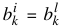
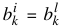
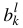
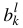

| |
Manual |
Given the matrix I containing columns i of I(q) and rows j of I(t), the principles of Gaussian analysis can be schematized as follows.
Single curve fitting:
Pick a row i of I and define a set of p Gaussians  , with amplitudes
, with amplitudes  , centers
, centers  , and widths
, and widths  . Then:
. Then:

In the US-SOMO HPLC-SAXS module, we let the user visually place the centers , and subsequently provide several methods for fitting (see below) by minimizing over, in general, 3p variables, , , and :

or in the case that  (i.e., the ith row of the matrix S containing the data-associated SDs has no zero elements):
(i.e., the ith row of the matrix S containing the data-associated SDs has no zero elements):

In the program, there are options to fix a combination of individual Gaussian curves k, amplitudes a, centres b, and widths c, which would result in fewer than 3p variables during the minimization. Constraints, in percentage from previous value or from the initial value, are also available for a, b, and c.
Global Gaussians:
In the US-SOMO program, entering the Global Gaussian mode does a fit of the preset single curve  against every curve i = 1, ..., m, keeping the centers b and widths c fixed. This provides an initialization of the amplitudes a for all curves as a starting point for global fitting or for refinement/extension to other datasets a previous global fitting on a subset of data.
against every curve i = 1, ..., m, keeping the centers b and widths c fixed. This provides an initialization of the amplitudes a for all curves as a starting point for global fitting or for refinement/extension to other datasets a previous global fitting on a subset of data.
Global fitting:
Given a  for a specific row i = l from the result of a single curve fitting, one can globally fit over the amplitudes by utilizing common centers,  for = {1, ...,m; i ≠ l}, and common widths,
for a specific row i = l from the result of a single curve fitting, one can globally fit over the amplitudes by utilizing common centers,  for = {1, ...,m; i ≠ l}, and common widths,  for = {1, ...,m; i ≠ l}, and then doing a global minimization over the pm + 2p variables , ,
for = {1, ...,m; i ≠ l}, and then doing a global minimization over the pm + 2p variables , ,  , as above. Global fitting is currently only available with a Levenberg-Marquardt minimization routine. As in the single Gaussian fitting, there are options to fix a combination of individual Gaussian curves k, amplitudes a, centres b, and widths c, which would result in fewer variables during the minimization. Constraints, in percentage from previous value or from the initial value, are also available for a, b, and c.
, as above. Global fitting is currently only available with a Levenberg-Marquardt minimization routine. As in the single Gaussian fitting, there are options to fix a combination of individual Gaussian curves k, amplitudes a, centres b, and widths c, which would result in fewer variables during the minimization. Constraints, in percentage from previous value or from the initial value, are also available for a, b, and c.
This document is part of the UltraScan Software Documentation
distribution.
Copyright © notice.
The latest version of this document can always be found at:
Last modified on October 30, 2013.